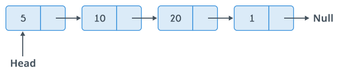

<!DOCTYPE html>
<html lang="en">
  <head>
    <meta charset="utf-8" />
    <meta name="viewport" content="width=device-width, initial-scale=1.0, maximum-scale=1.0, user-scalable=no" />

    <title>Tipos de Datos Abstractos</title>
    <link rel="stylesheet" href="./dist/reveal.css" />
    <link rel="stylesheet" href="./dist/theme/league.css" id="theme" />
    <link rel="stylesheet" href="./css/highlight/zenburn.css" />
    <link rel="stylesheet" href="./_assets/slides/css/filminas.css" />

  </head>
  <body>
    <div class="reveal">
      <div class="slides"><section  data-markdown><script type="text/template">
# Tipos de datos Abstractos</h1>
    
<small>Created by
    <a href="https://t.me/rmarku" target="_blank">
        <i class="fab fa-telegram-plane"></i>rmarku
    </a>
</small>

</script></section><section  data-markdown><script type="text/template">

## ¿Qué es la Información?

Unidad básica de información (BIT)

* 1 bit ➡️ 2 posiciones (0-1)
* n bit ➡️ 2<sup>n</sup> posiciones

</script></section><section  data-markdown><script type="text/template">

## Enteros Binarios

#### Representación de enteros positivos

00100110 ➡️ 2<sup>1</sup> + 2<sup>2</sup> + 2<sup>5</sup>=2 + 4 + 32=38

#### Representación de enteros Negativos (complemento a 1)

11011001 ➡️ -38<br>

Podemos representar desde -2<sup>(n-1)</sup>-1 hasta 2<sup>(n-1)</sup>-1

#### Representación de enteros Negativos (complemento a 2)
11011010 ➡️ -38<br>

<aside class="notes">
    El primer dígito representa positivo o negativo, en caso de ser negativo se invierten todos los otros bits<br>
    En este caso se suma un 1 a la representación del complemento a 1 del número negativo.
</aside>


</script></section><section  data-markdown><script type="text/template">

## Números con coma Binarios

#### Notación de punto flotante (**FLOAT**)

El número 387,53 se representa como 38753x10<sup>-2</sup>

El numero consta de una MANTISA(24bits) y un EXPONENTE(8bits).
Comúnmente se utilizan 32 bits

Esto nos permite representar números desde<br> 2<sup>23-1</sup> x 10<sup>127</sup> ➡️ 10<sup>-128</sup>

</script></section><section  data-markdown><script type="text/template">

## Caracteres

#### ASCII

<script>
    function ascii(txt) {
        document.getElementById('asciiOut').innerHTML = txt.value.charCodeAt(0)
        txt.select()
    }
__SCRIPT_END__

<input type="text" maxlength="1" size="1" onkeyup="ascii(this)"
       style="height: 100px;font-size: 40px;width: 100px;text-align: center;">
➡️ <span id="asciiOut" style="min-width: 100px;display: inline-block;"></span>

Interpretación de binarios en símbolos gráficos

Hay distintos encoding, ASCII, UTF8, UTF16, ISO, etc...

Lo más común es utilizar 8bits, pero hay encodings de 7, 10, 16, 32 bits...

El número binario **00100110**, puede ser el número **38**, el **0x26** o el símbolo **'&'**


<aside class="notes">
</aside>

</script></section><section  data-markdown><script type="text/template">

## Hardware y Softare

* La memoria de la PC es un conjunto de **BITs**
* Los bits se agrupan de a **BYTEs**
* Las computadoras tienen un conjunto de datos nativos
* Los lenguajes de programación de alto nivel, ayudan a simplificar el uso de estos tipos de datos.

<aside class="notes">
</aside>


</script></section><section  data-markdown><script type="text/template">

## Tipo de Dato
    
* No es el dato, es lo que puede contener
* Un tipo de dato es, en esencia, un espacio en memoria con restricciones.
* Por ejemplo, el tipo "int" representa, generalmente, un conjunto de enteros de 32 bits cuyo rango va desde 
el -2.147.483.648 al 2.147.483.647
   
</script></section><section  data-markdown><script type="text/template">

## Tipo de Dato

* También se restringen las operaciones que se pueden realizar en ellos.
* No confundirlos con Tipos de Datos Abstractos

<aside class="notes">
</aside>
</script></section><section  data-markdown><script type="text/template">

## Estructuras de datos

Las estructuras de datos son un conjunto de datos.


<aside class="notes">
</aside>

</script></section><section  data-markdown><script type="text/template">
## Tipos de Datos Abstractos

**Abstracción:** consiste en tomar las cualidades o características que nos resulten mas relevantes de un
    objeto, con el fin de delimitar el análisis de este


➡️


<aside class="notes">
    La abstracción es una técnica para centrarse en lo importante de un problema y solucionarlo mas fácilmente.
    Ej, Mapas
</aside>


</script></section><section  data-markdown><script type="text/template">
## Tipos de Datos Abstractos
    
* Los TDA son una abstracción de algún tipo de dato
* Un Tipo de dato abstracto es un conjunto de datos u objetos al cual se le asocian operaciones
* A nivel usuario, se pueden ver el esquema de los datos y las operaciones para manipular los elementos que lo componen.



<aside class="notes">
</aside>
</script></section></div>
    </div>

    <script src="./dist/reveal.js"></script>

    <script src="./plugin/markdown/markdown.js"></script>
    <script src="./plugin/highlight/highlight.js"></script>
    <script src="./plugin/zoom/zoom.js"></script>
    <script src="./plugin/notes/notes.js"></script>
    <script src="./plugin/math/math.js"></script>
    <script>
      function extend() {
        var target = {};
        for (var i = 0; i < arguments.length; i++) {
          var source = arguments[i];
          for (var key in source) {
            if (source.hasOwnProperty(key)) {
              target[key] = source[key];
            }
          }
        }
        return target;
      }

      // default options to init reveal.js
      var defaultOptions = {
        controls: true,
        progress: true,
        history: true,
        center: true,
        transition: 'default', // none/fade/slide/convex/concave/zoom
        plugins: [
          RevealMarkdown,
          RevealHighlight,
          RevealZoom,
          RevealNotes,
          RevealMath
        ]
      };

      // options from URL query string
      var queryOptions = Reveal().getQueryHash() || {};

      var options = extend(defaultOptions, {"controls":true,"progress":true,"slideNumber":true}, queryOptions);
    </script>

    <script src="./_assets/slides/js/pruebas.js"></script>
    <script src="./_assets/slides/js/init.js"></script>

    <script>
      Reveal.initialize(options);
    </script>
  </body>
</html>
